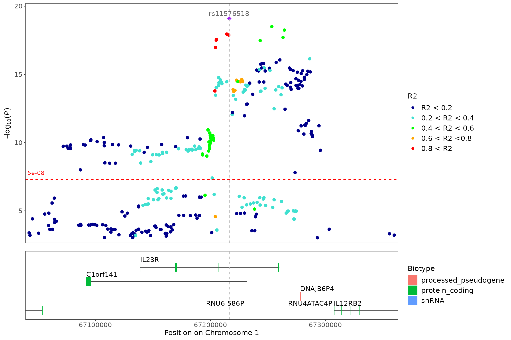
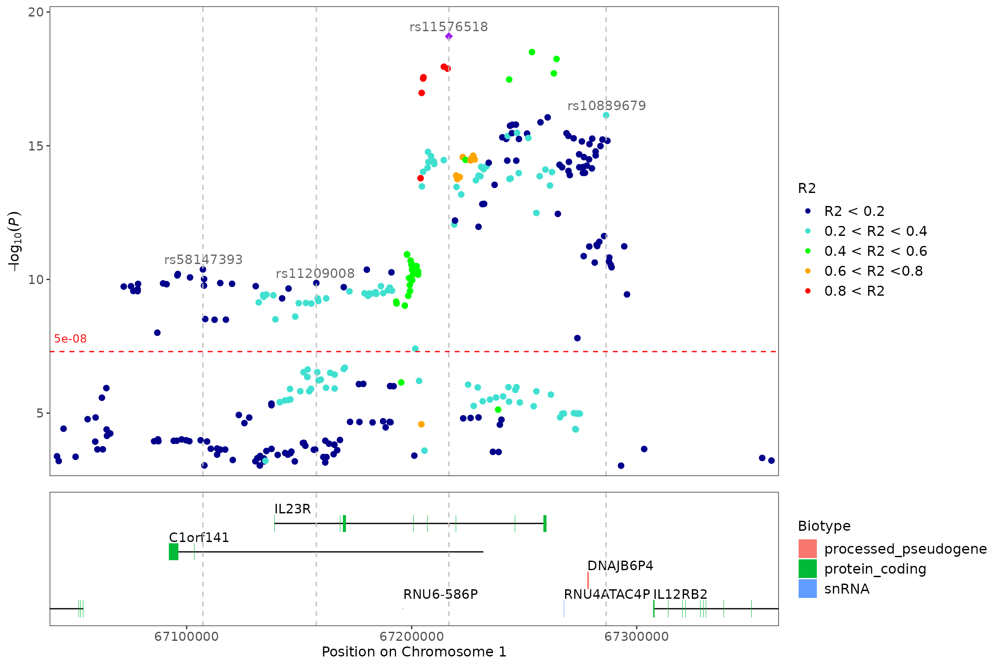

The locuszoom function allows us to entend the
functionality of regionplot when LD R2 values are
available. One of the sample datasets, CD_UKBB also has a
version with R2 values for these examples, R2_CD_UKBB.
#> CHROM POS ID P R2
#> 1 chr1 67216513 rs11576518 8.03684e-20 1.0000000
#> 2 chr1 67253446 rs1343151 3.12789e-19 0.4048777
#> 3 chr1 67264372 rs6669582 5.65295e-19 0.4008156
#> 4 chr1 67214307 rs2019262 1.10465e-18 0.9775277
#> 5 chr1 67215986 rs7517847 1.30571e-18 0.9785166
#> 6 chr1 67263180 rs11313807 1.95663e-18 0.4046232
locuszoom(R2_CD_UKBB)
#> [1] "Zoomed to region: 1:67042284-67359988"Annotate the variants with vertical lines highlighting their positions on the plot:
locuszoom(
R2_CD_UKBB,
annotate_with_vline=1e-8
)
#> [1] "Zoomed to region: 1:67042284-67359988"
Include a region size to show separate peaks:
locuszoom(
R2_CD_UKBB,
annotate_with_vline=1e-8,
region_size=1e5
)
#> [1] "Zoomed to region: 1:67042284-67359988"
Obtaining LD R2 values for Locuszoom plot
Not always will the R2 values be already included in your results data.
Extract the snp of interest rs7713270, from the inbuilt CD_UKBB dataset.
lead_snp <- CD_UKBB %>%
dplyr::filter(ID == "rs7713270")
snp <- paste0(lead_snp$CHROM,":",lead_snp$POS)Retrieve the R2 values with LDlinkR::LDproxy()
Run LDproxy to get variants correlated with rs7713270. Use the European (EUR) 1000 Genomes Project population and genome build GRCh38.
Note! To be able to run LDproxy, you have to register and get a token (see https://ldlink.nih.gov/?tab=apiaccess).
SNP <- LDlinkR::LDproxy(
snp = snp,
pop = "EUR",
r2d = "r2",
token = "NULL",
genome_build = paste0("grch", "38")
)
LD.link <- SNP %>%
dplyr::mutate(CHROM = stringr::str_extract(Coord, "chr[^:]*")) %>%
dplyr::mutate(POS = as.numeric(stringr::str_extract(Coord, "(?<=:)[0-9]*"))) %>%
dplyr::select(CHROM, POS, R2)Plot with the locuszoom function
Join the output from LDproxy with the CD_UKBB dataset to get the p-values for plotting.
snps.ld <- dplyr::inner_join(CD_UKBB, LD.link, by = c("CHROM", "POS"))
locuszoom(snps.ld)